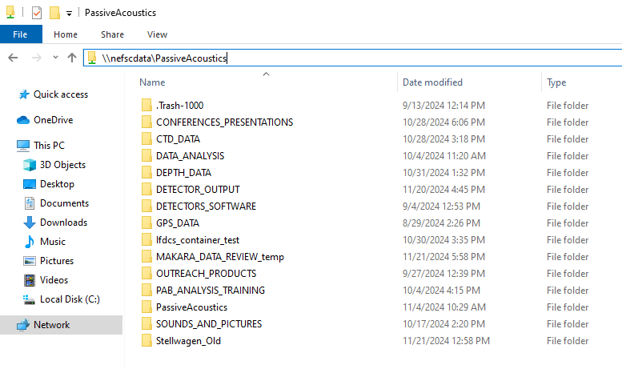

Passive Acoustics server structure
The Passive Acoustics server is our central storage location for all data and information that is not acoustic data. We are in the process of migrating from the PassiveAcoustics/Stellwagen_Old directory to the PassiveAcoustics directories. For information on where we store acoustic data see the PassiveAcoustic_soundfiles server page.
Accessing the server
To access the server for the first time, submit an ITD ticket requesting access to PA_group file shares and include Sofie or your team lead on the ticket so that they can provide approval.

To access from the Windows file explorer enter: \\nefscdata\PassiveAcoustics\
To access from a container enter: \\mnt\PassiveAcoustics\
For quick access on your computer, it is recommended to pin the server folder.
Make sure you are connected to the network via VPN.
PassiveAcoustics server information
The table below details the status of the server reorganization and comments on how to use each folder. For more information on specific folders, see ‘Readme’ docs located in the server.
| PassiveAcoustics | Stellwagen_Old | Comment |
|---|---|---|
| CONFERENCES_PRESENTATIONS | Final versions of all presentations and posters | |
| CTD_DATA | Oceanographic data from CTDs | |
| DATA_ANALYSIS | DATA_ANALYSIS | Migration in progress. Analysis specific code for new projects should be stored in the PassiveAcoustics/DATA_ANALYSIS folder. |
| DEPTH_DATA | Processed depth data tables from towed array and drifting recorders | |
| DETECTOR_OUTPUT | All detector output organized by detector then raw, summarized, or validated status. | |
| DETECTOR_SOFTWARE | DETECTORS | Migration in progress, new detectors should be stored in DETECTOR_SOFTWARE |
| GPS_DATA | GPS data tables from mobile platform | |
| MAKARA_DATA_REVIEW_temp | Temporary Makara software resources (temporary) | |
| OUTREACH_PRODUCTS | Graphics, web content, exhibits available for use | |
| PAB_ANALYSIS_TRAINING | PAB Analyst Training Resources | |
| SOUNDS_AND_PICTURES | Example sound clips and pictures | |
| FIELDWORK | To be migrated. Fieldwork plans, permitting, and contracts. | |
| GIS_TOOLS_PROJECTS | To be migrated. GIS projects and useful shapefiles | |
| GROUP_MEETINGS | To be migrated. | |
| INVENTORY | To be migrated. | |
| LITERATURE | To be migrated. Relevant literature to PAB | |
| MANUALS_SOFTWARE_CODE_LIBRARY | To be migrated. General code that could be used across projects and analysts. | |
| PROJECT_ADMIN_ACCDATA | To be reorganized. Data management for inventory and recorder performance | |
| STAFF | Retirement in progress. Staff specific files that do not align with server directory should be saved on google drive, personal computers, or nefsc personal file shares. | |
| TELEMETRY_DATA | To be migrated. Processed telemetry data tables | |
| TEMPERATURE_DATA | To be migrated. Processed temperature data from SoundTraps | |
| TETHYS_METADATA | To be migrated. Metadata files and schema for TETHYS database uploads | |
| TOWED_ARRAY | To be migrated. Files specific to AMAPPS towed array surveys | |
| VISUAL_SIGHTINGS_DATA | To be migrated. Miscellaneous visual sightings data |
Stellwagen Server Resources (transferred from Monday)
- How to view Stellwagen directories as pie charts
- Converting WAV files to FLAC
- How to get a list of directories on server
- How to copy data to Stellwagen server using Linux terminal
- VNC fix
- Instructions on how to copy data to Stellwagen server using Windows Terminal after plugging in hard drive with data into Kenobi Linux Computer
- How to view Stellwagen directory sizes using ncdu method